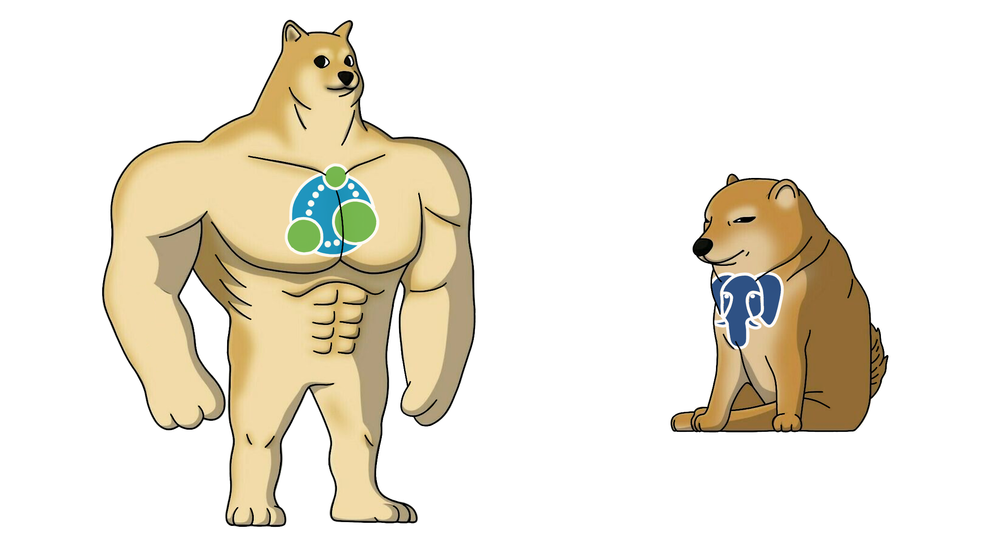
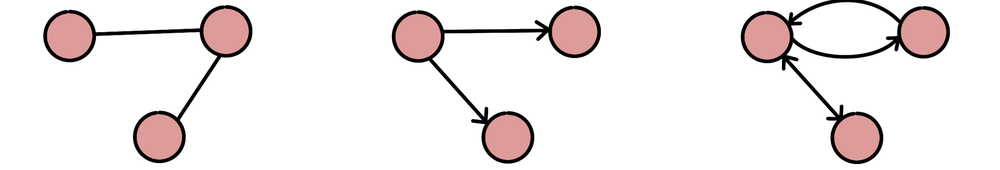
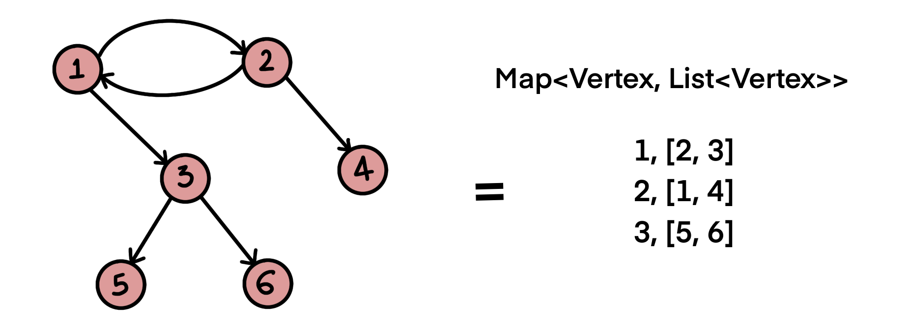
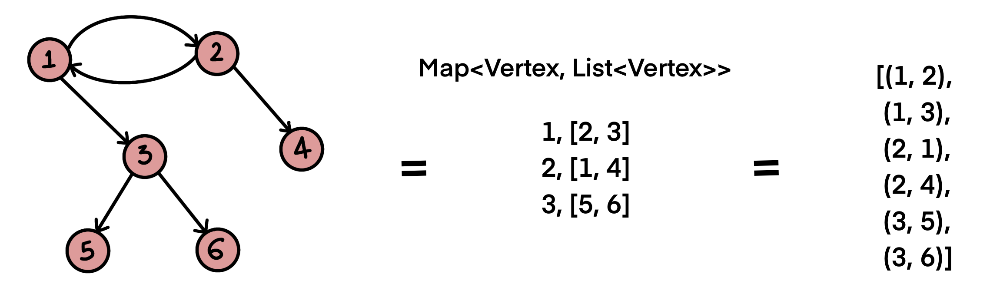
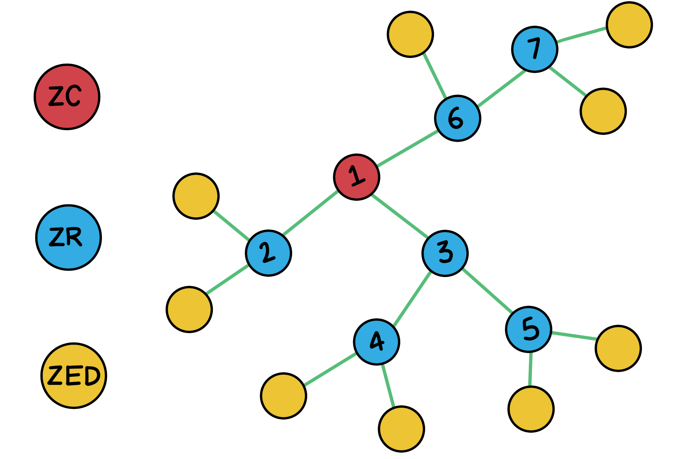
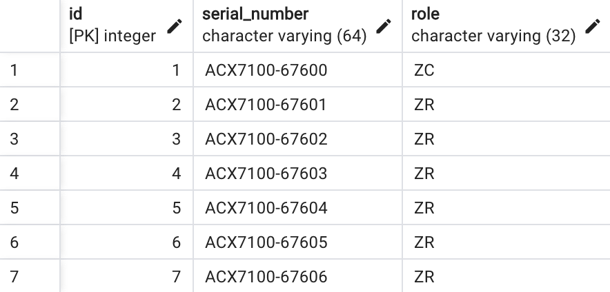
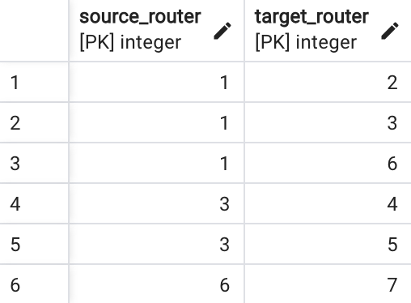
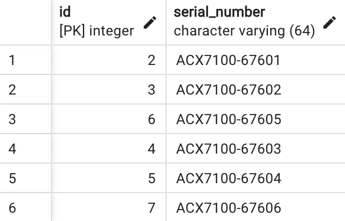
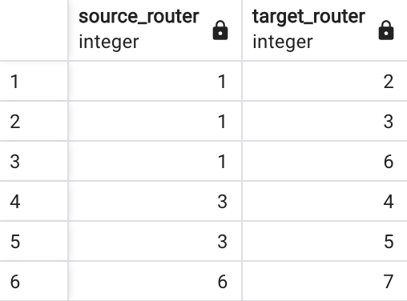

Postgres as a Graph Database
·
System Wisdom·
#System Design
#Database 5 min read
5 min read

Neo4j vs PostgreSQL
Have you ever come across the need to store a graph in a relational database because using/onboarding a graph database for a small use-case is overkill?
Before jumping into using a relational database like MySQL or PostgreSQL as a graph database, let’s lay down the fundamentals:
What is a Graph?
A graph is a set of vertices/nodes interconnected by edges/links. The edges can be directed (unidirectional or bidirectional) or undirected (no orientation, only infers a connection between nodes).

Figure 1: (Left to Right) Undirected, Unidirectional and Bidirectional
Graph Data Structure in Java
A vertex represents the entity, and an edge represents the relationship between entities:
class Vertex {
Integer label;
// standard constructor, getters, setters
}
The graph would be a collection of vertices and edges:
class Graph {
private Map<Vertex, List<Vertex>> adjVertices;
// standard constructor, getters, setters
void addVertex(Integer label) {
adjVertices.putIfAbsent(new Vertex(label), new ArrayList<>());
}
void addEdge(Integer label1, Integer label2) {
Vertex v1 = new Vertex(label1);
Vertex v2 = new Vertex(label2);
adjVertices.get(v1).add(v2);
adjVertices.get(v2).add(v1);
}
}
Graph createGraph() {
Graph graph = new Graph();
graph.addVertex(1);
graph.addVertex(2);
graph.addVertex(3);
graph.addVertex(4);
graph.addVertex(5);
graph.addVertex(6);
graph.addEdge(1, 2);
graph.addEdge(1, 3);
graph.addEdge(2, 1);
graph.addEdge(2, 4);
graph.addEdge(3, 5);
graph.addEdge(3, 6);
return graph;
}

Figure 2: Graph visual and map data-structure representation
Graph Data Structures in Postgres
Storing the graph Map<Vertex, List<Vertex>> in a relational database such as Postgres as-is would mean creating two tables: Vertex and Graph:
CREATE TABLE vertex (
vertex_id INT,
PRIMARY KEY(vertex_id)
// Other columns
);
CREATE TABLE graph (
graph_id INT,
vertex_id INT,
vertices INTEGER[]
PRIMARY KEY(graph_id),
CONSTRAINT fk_vertex_id
FOREIGN KEY(vertex_id)
REFERENCES vertex(vertex_id)
ON DELETE NO ACTION
);
Ideally, each element in the graph -> vertices array should represent foreign keys to the vertex table.
Relational databases operate most efficiently on properly normalized data models. Arrays are not relational data structures, by definition they are sets; while the SQL standard supports defining foreign keys on array elements, PostgreSQL currently does not support it. However, there is an ongoing effort to implement this.
A better way to store a graph in Postgres is by creating two tables: vertex and edge

Figure 3: Graph representation - List of Edges
CREATE TABLE vertex (
vertex_id INT,
PRIMARY KEY(vertex_id)
// Other columns
);
CREATE TABLE edge (
source_vertex INT REFERENCES vertex(vertex_id),
target_vertex INT REFERENCES vertex(vertex_id),
PRIMARY KEY (source_vertex, target_vertex)
);
The table edge represents the relationship between two vertices; the composite primary key (source_vertex, target_vertex) ensures that each edge is unique.
Real World Use-case
Zigbee protocol [2] and its mesh topology is a perfect example of a tree data structure. Zigbee has been around for a long time, initially conceived in the early 1990s, and is a widely wireless technology designed to facilitate low-cost, low-power wireless Internet of Things (IoT) networks.
Moving on to the technical details, Zigbee Devices Types:
- Zigbee Coordinator (ZC)
- Zigbee Router (ZR)
- Zigbee Endpoint Device (ZED)

Figure 4: Zigbee Mesh Topology
The Zigbee network has exactly one Zigbee Coordinator (ZC) responsible for forming and coordinating the network. The Zigbee Router (ZR) represents intermediate nodes to assist in relaying data between nodes in the network and is instrumental in building the Zigbee network. The Zigbee Endpoint Device (ZED) are nodes that are logically attached to a Zigbee Router (ZR) and are typically devices such as lights, sensors, switches, etc., and communicates only with the Zigbee Router (parent).
Create Queries
Tables to store ZC/ZR and their relationships in Postgres:
CREATE TABLE router (
id SERIAL PRIMARY KEY,
serial_number VARCHAR(64),
role VARCHAR(32)
);
CREATE TABLE neighbor (
PRIMARY KEY (source_router, target_router),
source_router INTEGER REFERENCES router(id),
target_router INTEGER REFERENCES router(id)
);
The router table has ZC and ZR, distinguished by the role column; in a Zigbee network, ZC and ZR are essentially routers, where ZC is often called Leader Router/Co-ordinator. The relationship between ZC and ZR(s) and ZR and ZR(s) is stored in the neighbor table.
Insert Queries
The data inserts for the mesh topology as shown in Figure 4 (without leaf nodes/end devices):
INSERT INTO router (serial_number, role) VALUES ('ACX7100-67600', 'ZC');
INSERT INTO router (serial_number, role) VALUES ('ACX7100-67601', 'ZR');
INSERT INTO router (serial_number, role) VALUES ('ACX7100-67602', 'ZR');
INSERT INTO router (serial_number, role) VALUES ('ACX7100-67603', 'ZR');
INSERT INTO router (serial_number, role) VALUES ('ACX7100-67604', 'ZR');
INSERT INTO router (serial_number, role) VALUES ('ACX7100-67605', 'ZR');
INSERT INTO router (serial_number, role) VALUES ('ACX7100-67606', 'ZR');

Figure 5: Entries in Router
INSERT INTO neighbor (source_router, target_router) VALUES (1, 2);
INSERT INTO neighbor (source_router, target_router) VALUES (1, 3);
INSERT INTO neighbor (source_router, target_router) VALUES (1, 6);
INSERT INTO neighbor (source_router, target_router) VALUES (3, 4);
INSERT INTO neighbor (source_router, target_router) VALUES (3, 5);
INSERT INTO neighbor (source_router, target_router) VALUES (6, 7);

Figure 6: Entries in Neighbor
Select Queries
A router (ZC or ZR) has neighbors, and a neighbor router (ZR) also has neighbors (ZR), and this goes on until we have a leaf node (ZED). Querying for all the neighbors of a router = traversing the graph.
Postgres offers built-in recursive queries, typically used for hierarchical or tree-structured data, i.e., to find all the direct and indirect relations to an entity.
Get all neighbors (neighbors of neighbors) for a given router id:
WITH RECURSIVE all_neighbors AS (
SELECT neighbor.target_router
FROM neighbor
WHERE neighbor.source_router = 1
UNION
SELECT neighbor.target_router
FROM neighbor
JOIN all_neighbors ON neighbor.source_router = all_neighbors.target_router
)
SELECT router.id, router.serial_number
FROM router
JOIN all_neighbors ON router.id = all_neighbors.target_router;

Figure 7: All interconnected neighbors
Get all neighbors (neighbors of neighbors - relationships) for a given router id
WITH RECURSIVE all_neighbors AS (
SELECT neighbor.source_router, neighbor.target_router
FROM neighbor
WHERE neighbor.source_router = 1
UNION
SELECT neighbor.source_router, neighbor.target_router
FROM neighbor
JOIN all_neighbors ON neighbor.source_router = all_neighbors.target_router
)
SELECT all_neighbors.source_router, all_neighbors.target_router FROM all_neighbors;

Figure 8: Neighbors of neighbors
Note: Postgres recursive queries work with circular graphs and will not lead to an infinite loop.
References
[1] “7.8. WITH Queries (Common Table Expressions),” PostgreSQL Documentation, May 11, 2023. https://www.postgresql.org/docs/current/queries-with.html#QUERIES-WITH-RECURSIVE
[2] BHIS, “Understanding Zigbee and Wireless Mesh Networking,” Black Hills Information Security, Aug. 27, 2021. https://www.blackhillsinfosec.com/understanding-zigbee-and-wireless-mesh-networking/
[3]“Apache AGE,” age.apache.org. https://age.apache.org/
[4] D. Paulus, “Postgres: The Graph Database You Didn’t Know You Had,” dylanpaulus.com. https://www.dylanpaulus.com/posts/postgres-is-a-graph-database

Cite this article as: Adesh Nalpet Adimurthy. (Sep 27, 2023). Postgres as a Graph Database. PyBlog. https://www.pyblog.xyz/postgres-as-graph
 #index
#index